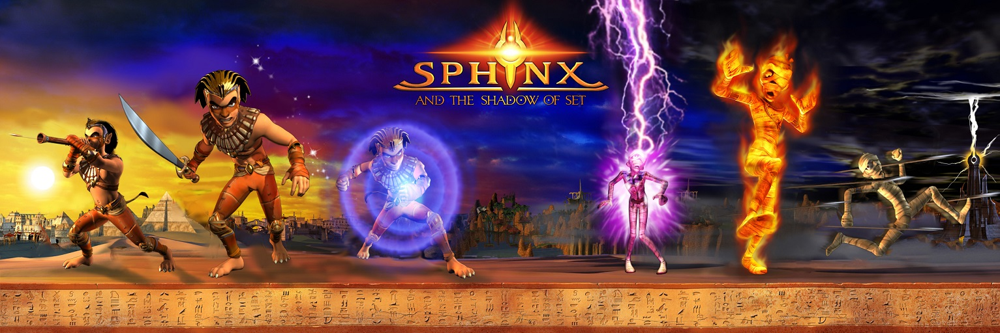

Introducing the first-ever PC mod for Sphinx and the Cursed Mummy, a groundbreaking restoration that brings back the game’s lost content, allowing players to experience the original storyline in its fullest form. This mod resurrects the long-abandoned worlds of Akaria and Sakkara, while also offering playable versions of the beta levels for Abydos, Heliopolis, and Uruk. Dive into previously unexplored regions and uncover the fascinating narrative arcs and environments that were once scrapped from the final release.
The mod includes the following restored and new areas:
This mod allows you to choose your path: start the game afresh or skip ahead to jump right into the new regions and quests. In Akaria, players enter an underwater city, ruled by King Sobek. The Akarians are in a bitter conflict with Abydos, manipulated by the treacherous advisor Ishka, whose machinations have driven the two civilizations to war.
In Sakkara, immerse yourself in a jungle world under siege by the terrifying Gebs, creatures of enormous size who have been enslaved by the tyrannical Geb Queen. The region is divided into two main villages: one, a stronghold of the Hittite military forces, and the other, a peaceful farming village that has been devastated by the Gebs. The survivors of the attack have been forced to take refuge in the caves, hiding from the ongoing onslaught.
Embark on an adventure like never before, with previously unseen content that expands the universe of Sphinx and the Cursed Mummy in ways fans have always dreamed of. Enjoy this epic new journey through lost worlds, filled with rich stories, exciting challenges, and thrilling discoveries.
I hope you enjoy this new—never-before-seen—Sphinx adventure!
Main mod development and level restoration
EngineX and Euroland-side fixes, and help
3D Modeling
French Translation
Spanish Translation and copyediting
English text improvements and copyediting
Testers